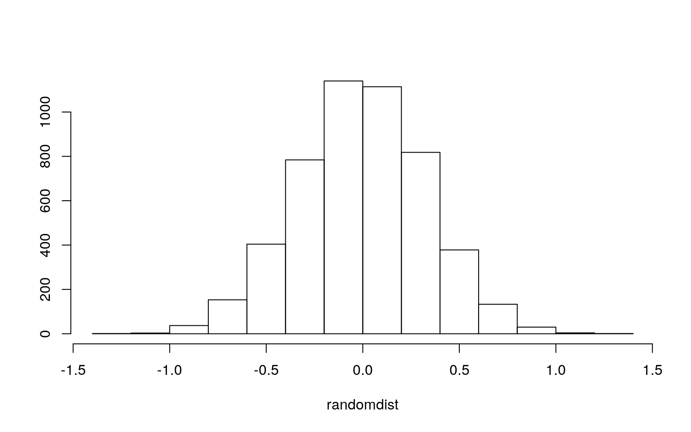
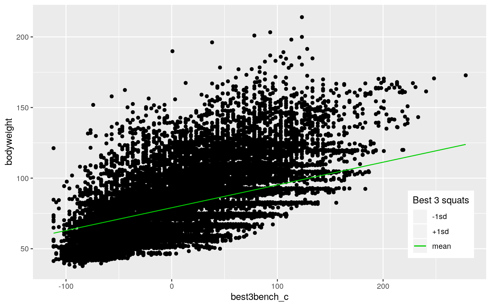
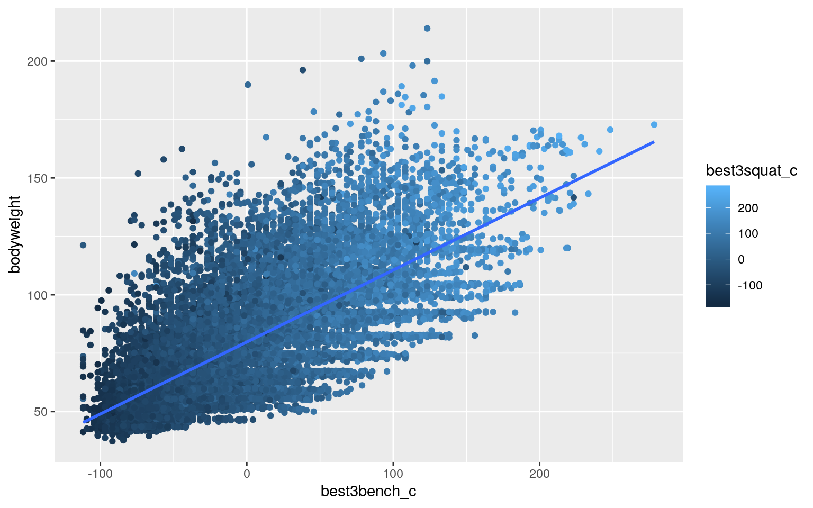
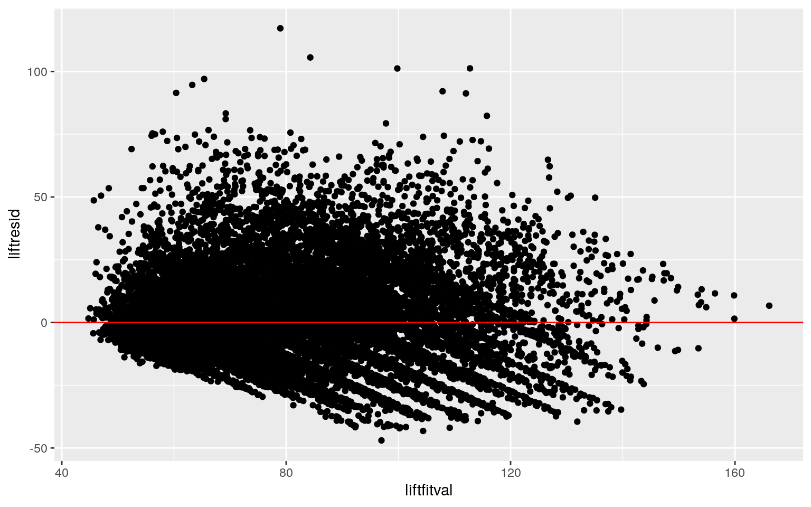
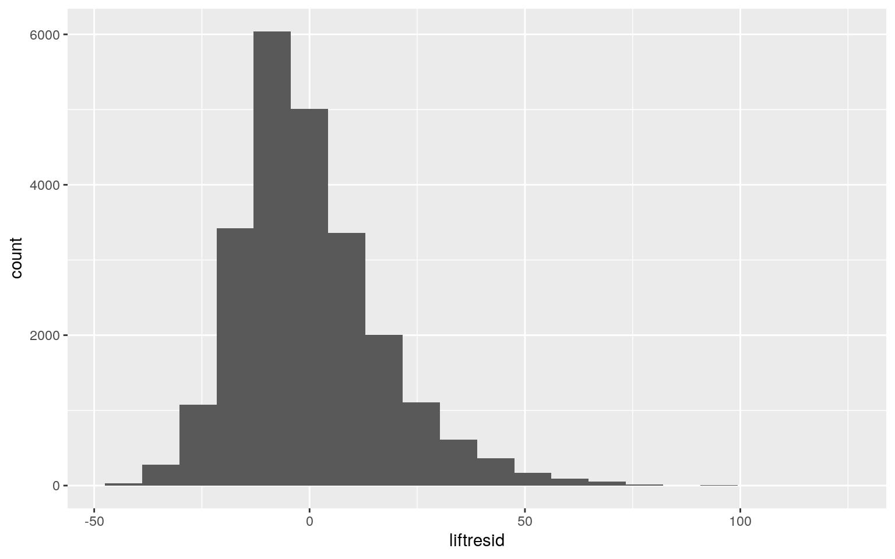
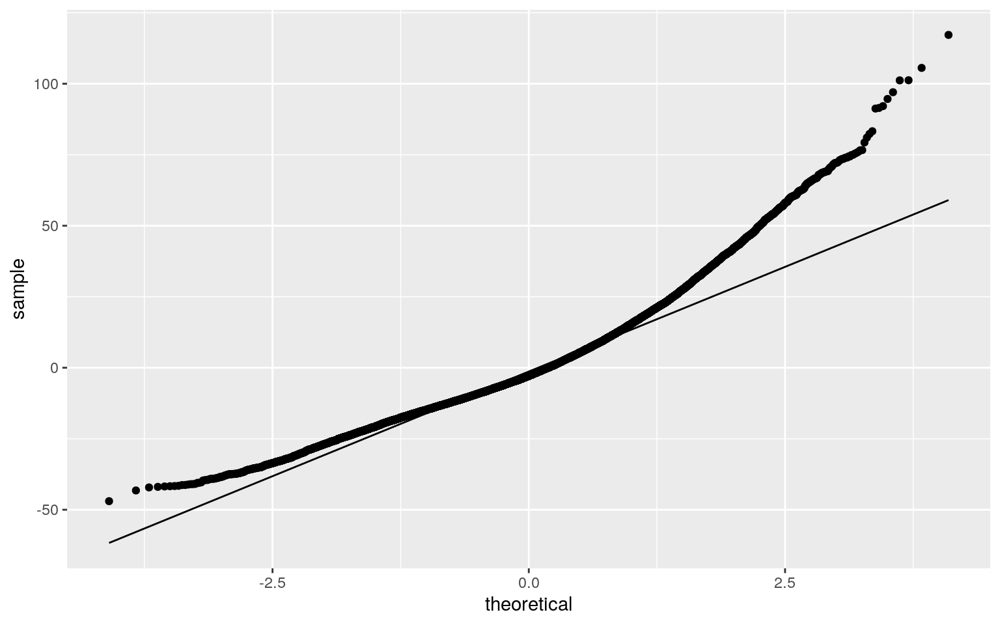
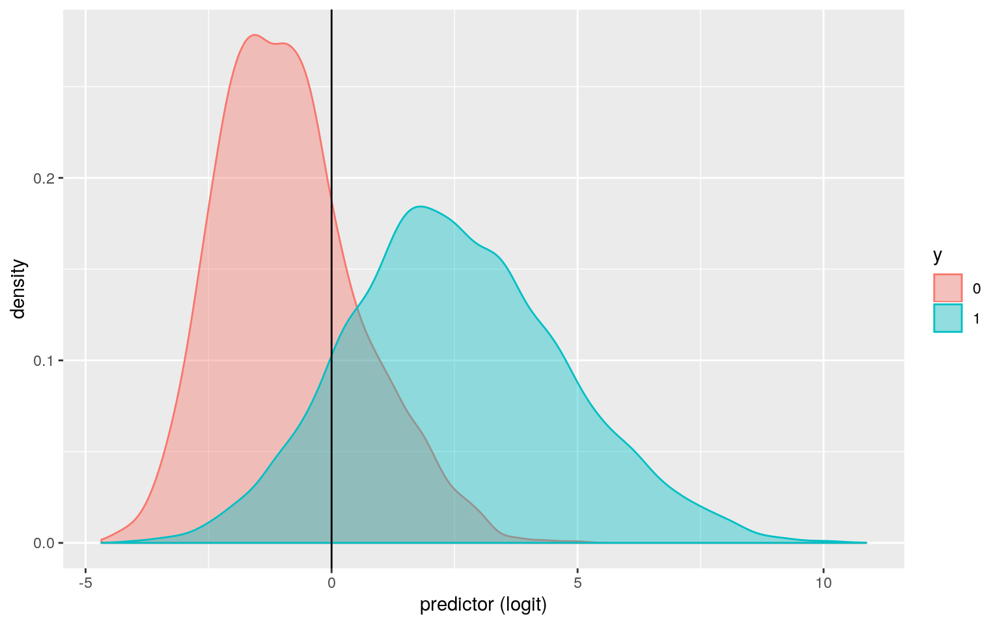
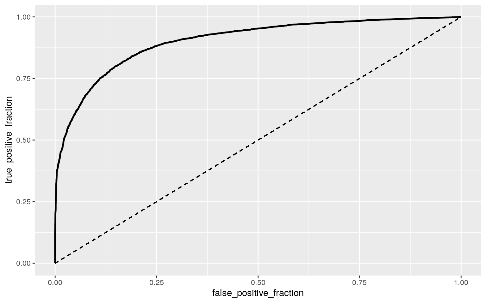

library(dplyr)
liftdatraw1 <- readr::read_csv("https://raw.githubusercontent.com/rfordatascience/tidytuesday/master/data/2019/2019-10-08/ipf_lifts.csv")
liftdataraw2<-na.omit(liftdatraw1)
liftdata<-liftdataraw2%>%select(sex,event,equipment,age,division,"bodyweight"=bodyweight_kg,"best3squat"=best3squat_kg,"best3bench"=best3bench_kg,"best3deadlift"=best3deadlift_kg,place)
liftdata3<-liftdataraw2%>%select(sex, "bodyweight"=bodyweight_kg, "maxsquat"=best3squat_kg, "maxbench"=best3bench_kg, "maxdead"=best3deadlift_kg, equipment)
liftdata <- liftdata[!is.na(as.numeric(as.character(liftdata$place))),]My dataset was found from GitHub’s Tidy Tuesday website and it contained information about powerlifting. Data about powerlifting competitions over time are included in the dataset. I will be focusing on seven of the variables described: bodyweight, sex, equipment type, place, max weight on three reps of deadlift, max weight on three repos of bench press, and max weight on thee reps of squats. The bodyweight variable is the weight of the individual powerlifter in kilograms. The max weight on three reps of deadlift, max weight on three repos of bench press, and max weight on thee reps of squats variables are all measured in kilograms. With that said, bodyweight, max weight on three reps of deadlift, max weight on three repos of bench press, and max weight on thee reps of squats are all numeric variables. The place is the result in standing of the competition in which the powerlifter participated in (ex. First place). The equipment type is a categorical variable in which it categorized the type of equipment the powerlifter used. The three categories of equipment type are raw, single-ply, and wraps. The last variable is sex. The sex variable is a binary variable with only a male or female option. This dataset was chosen as I participate in powerlifting personally and am interested in the differences in powerlifting statistics based on equipment types as well as differences between the two sexes.
mano<-manova(cbind(best3squat,best3bench, best3deadlift)~equipment, data=liftdata)
summary(mano)## Df Pillai approx F num Df den Df Pr(>F)
## equipment 2 0.12718 534.85 6 47256 < 2.2e-16 ***
## Residuals 23629
## ---
## Signif. codes: 0 '***' 0.001 '**' 0.01 '*' 0.05 '.' 0.1
' ' 1summary.aov(mano)## Response best3squat :
## Df Sum Sq Mean Sq F value Pr(>F)
## equipment 2 7169805 3584903 682.48 < 2.2e-16 ***
## Residuals 23629 124117267 5253
## ---
## Signif. codes: 0 '***' 0.001 '**' 0.01 '*' 0.05 '.' 0.1
' ' 1
##
## Response best3bench :
## Df Sum Sq Mean Sq F value Pr(>F)
## equipment 2 2544755 1272377 413.85 < 2.2e-16 ***
## Residuals 23629 72647615 3075
## ---
## Signif. codes: 0 '***' 0.001 '**' 0.01 '*' 0.05 '.' 0.1
' ' 1
##
## Response best3deadlift :
## Df Sum Sq Mean Sq F value Pr(>F)
## equipment 2 1280991 640495 160.8 < 2.2e-16 ***
## Residuals 23629 94116634 3983
## ---
## Signif. codes: 0 '***' 0.001 '**' 0.01 '*' 0.05 '.' 0.1
' ' 1liftdata%>%group_by(equipment)%>%summarize(mean(best3squat),mean(best3bench), mean(best3deadlift))## # A tibble: 3 x 4
## equipment `mean(best3squat)` `mean(best3bench)`
`mean(best3deadlift)`
## <chr> <dbl> <dbl> <dbl>
## 1 Raw 183. 118. 207.
## 2 Single-ply 225. 142. 224.
## 3 Wraps 236. 156. 263.pairwise.t.test(liftdata$best3squat,liftdata$equipment, p.adj="none")##
## Pairwise comparisons using t tests with pooled SD
##
## data: liftdata$best3squat and liftdata$equipment
##
## Raw Single-ply
## Single-ply < 2e-16 -
## Wraps 7.4e-09 0.22
##
## P value adjustment method: nonepairwise.t.test(liftdata$best3bench,liftdata$equipment,p.adj="none")##
## Pairwise comparisons using t tests with pooled SD
##
## data: liftdata$best3bench and liftdata$equipment
##
## Raw Single-ply
## Single-ply < 2e-16 -
## Wraps 5.2e-08 0.057
##
## P value adjustment method: nonepairwise.t.test(liftdata$best3deadlift,liftdata$equipment,p.adj="none")##
## Pairwise comparisons using t tests with pooled SD
##
## data: liftdata$best3deadlift and liftdata$equipment
##
## Raw Single-ply
## Single-ply < 2e-16 -
## Wraps 2.4e-12 8.9e-07
##
## P value adjustment method: none#probability of type I error
1-(.95)^9## [1] 0.3697506#Bonferroni correction
0.05/13## [1] 0.003846154The MANOVA test was chosen to be ran to determine whether the variables best3squat, best3bench, and best3deadlift differed by the type of equipment used. The null hypothesis for the test was determined to be: The variables best3squat, best3bench, and best3deadlift were equal for the three equipment types described. The alternative hypothesis was determined to be: For at least one of the variables (best3squat, best3bench, and best3deadlift), the equipment type mean was different at least once. The MANOVA test results were significant which showed that there were significant differences found between the types of equipment in the dataset on the variables best3squat, best3bench, and best3deadlift (Pillai trace = 0.127, pseudo F(6,47256)=534.85, p<0.0001). In addition, a univariate ANOVA was performed to determine the responses that shows the mean differences across the groups (best3squat, best3bench, and best3deadlift). The univariate ANOVA for best3squat, best3bench, and best3deadlift were determined to be significant (F(2,23629)=682.48, p<0.0001, F(2,23629)=413.85, p<0.0001, and F(2, 23269)=160.8, p<0.0001 based on the order of best3squat, best3bench, and best3deadlift). After the t-test was performed, it was determined that raw and wraps and raw and single-ply differed significantly for best3squat. Raw and wraps, raw and single-ply and single-ply and wraps were determined to differ significantly for best3deadlift. Raw and single-ply and raw and wraps differed significantly for best3bench. There was a total of 1 MANOVA, 3 ANOVA, and 9 t-tests performed in the order described for a grand total of 13 tests. The probability of type I error was calculated to be 0.37, and the adjusted significance level was calculated to be 0.0038 according to the Bonferroni correction. The post-hoc tests were not affected by the new significance and the significance of the differences remained the same. The assumptions for the MANOVA test performed includes random samples, independent observation, multivariate normality of the dependent variables, homogeneity of the within group covariance matrices, a linear relationship between the dependent variables, no extreme multivariate or univariate outliers, and no multicollinearity. Unfortunately, not all of the assumptions were met in my test. The assumption on no multicollinearity was not met as my three dependent variables were likely to be correlated. There was also not a linear relationship among the dependent variables. All the other assumptions were met.
t.test(data=liftdata, bodyweight~sex)##
## Welch Two Sample t-test
##
## data: bodyweight by sex
## t = -84.475, df = 21803, p-value < 2.2e-16
## alternative hypothesis: true difference in means is not
equal to 0
## 95 percent confidence interval:
## -23.42733 -22.36482
## sample estimates:
## mean in group F mean in group M
## 64.97561 87.87168bodweight<-liftdata%>%dplyr::select(1,6)
bodweight%>%dplyr::group_by(sex)%>%dplyr::summarize(means=mean(bodyweight))%>%dplyr::summarize(`mean_diff:`=diff(means))## # A tibble: 1 x 1
## `mean_diff:`
## <dbl>
## 1 22.9randomdist<-vector()
for(i in 1:5000){
proj2dat<-data.frame(bodyweight=sample(liftdata$bodyweight),sex=liftdata$sex)
randomdist[i]<-mean(proj2dat[proj2dat$sex=="M",]$bodyweight)-
mean(proj2dat[proj2dat$sex=="F",]$bodyweight)}
{hist(randomdist,main="",ylab=""); abline(v =22.8,col="red")}
I performed a t-test on sex and bodyweight. My null hypothesis was that there was no difference in the means of the bodyweight variable between the two sexes. My alternative hypothesis was that there was a significant difference in the means of the bodyweight variable between the two sexes. The t-test results indicated that there was a significant difference in bodyweight between the two sexes (p-value < 0.05). The males had an average body weight of 87.872kg, while the females had an average body weight of 64.976 kg.
library(lmtest)
library(sandwich)
liftdata$best3squat_c <- liftdata$best3squat - mean(liftdata$best3squat)
liftdata$best3bench_c<-liftdata$best3bench - mean(liftdata$best3bench)
liftdata$bodyweight_c<-liftdata$bodyweight-mean(liftdata$bodyweight)
liftfit<-lm(bodyweight~best3squat_c*best3bench_c, data=liftdata)
summary(liftfit)##
## Call:
## lm(formula = bodyweight ~ best3squat_c * best3bench_c,
data = liftdata)
##
## Residuals:
## Min 1Q Median 3Q Max
## -46.982 -11.273 -2.817 8.611 117.195
##
## Coefficients:
## Estimate Std. Error t value Pr(>|t|)
## (Intercept) 7.903e+01 1.386e-01 570.369 <2e-16 ***
## best3squat_c 1.159e-01 3.719e-03 31.154 <2e-16 ***
## best3bench_c 1.612e-01 5.001e-03 32.239 <2e-16 ***
## best3squat_c:best3bench_c 1.921e-04 2.211e-05 8.689
<2e-16 ***
## ---
## Signif. codes: 0 '***' 0.001 '**' 0.01 '*' 0.05 '.' 0.1
' ' 1
##
## Residual standard error: 16.77 on 23628 degrees of
freedom
## Multiple R-squared: 0.5276, Adjusted R-squared: 0.5275
## F-statistic: 8795 on 3 and 23628 DF, p-value: < 2.2e-16newlift<-liftdata
newlift$best3squat_c<-mean(liftdata$best3squat_c)
newlift$mean<-predict(liftfit,newlift)
newlift$best3squat_c<-mean(liftdata$best3squat_c)+sd(liftdata$best3squat_c)
newlift$plus.sd<-predict(liftfit,newlift)
newlift$best3squat_c<-mean(liftdata$best3squat_c)-sd(liftdata$best3squat_c)
newlift$minus.sd<-predict(liftfit,newlift)
intnew<-newlift%>%select(bodyweight,best3bench_c,mean,plus.sd,minus.sd)%>%gather(best3squat,value,-bodyweight,-best3bench_c)
liftcols<-c("#619CFF","#F8766D","#00BA38")
names(liftcols)<-c("-1 sd","mean","+1 sd")
liftcols=as.factor(liftcols)
ggplot(liftdata,aes(best3bench_c,bodyweight),group=liftcols)+geom_point()+geom_line(data=newlift,aes(y=mean,color="mean"))+geom_line(data=newlift,aes(y=plus.sd,color="+1sd"))+geom_line(data=newlift,aes(y=minus.sd,color="-1sd"))+scale_color_manual(values=liftcols)+labs(color="Best 3 squats")+theme(legend.position=c(.9,.2))
qplot(x=best3bench_c,y=bodyweight,color=best3squat_c,data=liftdata)+stat_smooth(method="lm",se=FALSE,fullrange=TRUE)
liftresid<-liftfit$residuals
liftfitval<-liftfit$fitted.values
ggplot()+geom_point(aes(liftfitval,liftresid))+geom_hline(yintercept=0, color='red')
ggplot()+geom_histogram(aes(liftresid), bins=20)
ggplot()+geom_qq(aes(sample=liftresid))+geom_qq_line(aes(sample=liftresid))
bptest(liftfit)##
## studentized Breusch-Pagan test
##
## data: liftfit
## BP = 595.01, df = 3, p-value < 2.2e-16coeftest(liftfit, vcov = vcovHC(liftfit))##
## t test of coefficients:
##
## Estimate Std. Error t value Pr(>|t|)
## (Intercept) 7.9033e+01 1.4469e-01 546.2405 < 2.2e-16 ***
## best3squat_c 1.1588e-01 4.6289e-03 25.0330 < 2.2e-16 ***
## best3bench_c 1.6121e-01 6.1768e-03 26.0995 < 2.2e-16 ***
## best3squat_c:best3bench_c 1.9214e-04 2.3079e-05 8.3253 <
2.2e-16 ***
## ---
## Signif. codes: 0 '***' 0.001 '**' 0.01 '*' 0.05 '.' 0.1
' ' 1liftfit1<-lm(bodyweight~best3squat_c+best3bench_c, data=liftdata)
summary(liftfit1)##
## Call:
## lm(formula = bodyweight ~ best3squat_c + best3bench_c,
data = liftdata)
##
## Residuals:
## Min 1Q Median 3Q Max
## -47.201 -11.266 -2.689 8.574 115.662
##
## Coefficients:
## Estimate Std. Error t value Pr(>|t|)
## (Intercept) 79.775898 0.109256 730.18 <2e-16 ***
## best3squat_c 0.113956 0.003719 30.64 <2e-16 ***
## best3bench_c 0.169614 0.004914 34.52 <2e-16 ***
## ---
## Signif. codes: 0 '***' 0.001 '**' 0.01 '*' 0.05 '.' 0.1
' ' 1
##
## Residual standard error: 16.8 on 23629 degrees of
freedom
## Multiple R-squared: 0.526, Adjusted R-squared: 0.526
## F-statistic: 1.311e+04 on 2 and 23629 DF, p-value: <
2.2e-16anova(liftfit,liftfit1,test="LRT")## Analysis of Variance Table
##
## Model 1: bodyweight ~ best3squat_c * best3bench_c
## Model 2: bodyweight ~ best3squat_c + best3bench_c
## Res.Df RSS Df Sum of Sq Pr(>Chi)
## 1 23628 6644286
## 2 23629 6665515 -1 -21229 < 2.2e-16 ***
## ---
## Signif. codes: 0 '***' 0.001 '**' 0.01 '*' 0.05 '.' 0.1
' ' 1A linear regression was performed to predict the bodyweight in kg from the best3squat and best3bench variables. The null hypothesis was that there was no interaction between the best3squat and best3bench variables on the bodyweight variable. The alternative hypothesis was that there is an interaction between the best3squat and best3bench variables on the bodyweight variable. The intercepts was interpreted as for every 1kg increase in the best3bench variable, the bodyweight variable increased by 1.612e-01 kg. In addition, the interaction showed that for every 1kg increase in the best3squat variable, the bodyweight variable increases by an average of 1.159e-01 kg. Finally, the interaction also showed the for every 1kg increase in both the variables best3bench and best3squat, the bodyweight variable increases by 1.921e-04 kg. The assumptions for linearity, normality and homoskedasticity were checked graphically. Homoskedasticity and linearity were confirmed to be met by plotting the liftfitval by the fitresid in ggplot. The assumption of normality was confirmed by making a line graph of theoretical vs. sample and by making a histogram of the residuals. Following confirming the assumptions, the regression was recomputed using the results with robust standard errors. The results obtained from robust standard errors differed from the results obtained before as the new SE values were all larger than before. The change in SE did not change the significance of any of the predictors in the model. The model computed explained 52.6% of the variation in the outcomes. This was calculated from the adjusted R-squared value.
sample_distn<-replicate(1000,{
boot_dat<-liftdata[sample(nrow(liftdata), replace=TRUE),]
liftfit2<-lm(bodyweight~best3squat_c*best3bench_c, data=boot_dat)
coef(liftfit2)})
sample_distn%>%t%>%as.data.frame%>%summarize_all(sd)## (Intercept) best3squat_c best3bench_c
best3squat_c:best3bench_c
## 1 0.1471985 0.00465116 0.006254204 2.312674e-05The same regression was re-ran with the bootstrapped SE. The SE obtained were slightly different than the robust SE and the original. The newly obtained bootstrapped SE for the intercept was determined to be 0.1464866, while the original was determined to be 0.139. The best3squat SE for the bootstrap was determined to be 0.004691988 while the original was 0.0037. the best3bench bootstrapped SE was determined to be 0.006265698 while the original was 0.005. The bootstrapped SE for the interaction was determined to be 2.353e-05 while the original was determined to be 2.21e-05. Overall, the bootstrapped SE were all a little bit higher than the originals. In comparison to the robust SE, the bootstrapped SE were all very close together. The p-values were still below 0.05 in the bootstrapped SE.
liftdata1<-liftdata%>%mutate(y=ifelse(sex=="M", 1,0))
liftfit3<-glm(y~bodyweight+best3squat, data=liftdata1, family=binomial)
summary(liftfit3)##
## Call:
## glm(formula = y ~ bodyweight + best3squat, family =
binomial,
## data = liftdata1)
##
## Deviance Residuals:
## Min 1Q Median 3Q Max
## -3.1970 -0.5605 0.1738 0.5566 2.9244
##
## Coefficients:
## Estimate Std. Error z value Pr(>|z|)
## (Intercept) -6.2115613 0.0933443 -66.545 < 2e-16 ***
## bodyweight 0.0042871 0.0011709 3.661 0.000251 ***
## best3squat 0.0333832 0.0005073 65.806 < 2e-16 ***
## ---
## Signif. codes: 0 '***' 0.001 '**' 0.01 '*' 0.05 '.' 0.1
' ' 1
##
## (Dispersion parameter for binomial family taken to be 1)
##
## Null deviance: 30705 on 23631 degrees of freedom
## Residual deviance: 17693 on 23629 degrees of freedom
## AIC: 17699
##
## Number of Fisher Scoring iterations: 6exp(coef(liftfit3))## (Intercept) bodyweight best3squat
## 0.002006103 1.004296353 1.033946651prob<-predict(liftfit3, type="response")
table(predict=as.numeric(prob>.5), truth=liftdata1$y)%>%addmargins## truth
## predict 0 1 Sum
## 0 6290 1814 8104
## 1 2066 13462 15528
## Sum 8356 15276 23632#accuracy
(6290+13462)/23632## [1] 0.8358158#tnr (specificity)
(6290)/8104## [1] 0.7761599#tpr (sensitivity aka recall)
(13462)/15528## [1] 0.86695#ppv (precision)
(13462)/(15276)## [1] 0.8812516liftdata1$y <-as.factor(liftdata1$y)
liftdata1$logit<-predict(liftfit3, type="link")
liftdata1%>%ggplot()+geom_density(aes(logit, color=y, fill=y), alpha=.4)+geom_vline(xintercept = 0)+xlab("predictor (logit)")
library(plotROC)
prob1<-predict(liftfit3, type="response")
ROCplot<-ggplot(liftdata1)+geom_roc(aes(d=sex,m=prob1), n.cuts=0)+geom_segment(aes(x=0, xend=1, y=0, yend=1), lty=2)
ROCplot
calc_auc(ROCplot)## PANEL group AUC
## 1 1 -1 0.9033721class_diag<-function(probs,truth){
tab<-table(factor(probs>.5,levels=c("FALSE","TRUE")),truth)
acc=sum(diag(tab))/sum(tab)
sens=tab[2,2]/colSums(tab)[2]
spec=tab[1,1]/colSums(tab)[1]
ppv=tab[2,2]/rowSums(tab)[2]
if(is.numeric(truth)==FALSE & is.logical(truth)==FALSE) truth<-as.numeric(truth)-1
#CALCULATE EXACT AUC
ord<-order(probs, decreasing=TRUE)
probs <- probs[ord]; truth <- truth[ord]
TPR=cumsum(truth)/max(1,sum(truth))
FPR=cumsum(!truth)/max(1,sum(!truth))
dup<-c(probs[-1]>=probs[-length(probs)], FALSE)
TPR<-c(0,TPR[!dup],1); FPR<-c(0,FPR[!dup],1)
n <- length(TPR)
auc<- sum( ((TPR[-1]+TPR[-n])/2) * (FPR[-1]-FPR[-n]) )
data.frame(acc,sens,spec,ppv,auc)
}
set.seed(1234)
k=10
liftdata2<-liftdata1[sample(nrow(liftdata1)),]
folds<-cut(seq(1:nrow(liftdata1)),breaks=k,labels=F)
diags<-NULL
for(i in 1:k){
train<-liftdata2[folds!=i,]
test<-liftdata2[folds==i,]
truth<-test$y
fit<-glm(y~bodyweight+best3squat,data=train,family="binomial")
probs<-predict(fit,newdata = test,type="response")
diags<-rbind(diags,class_diag(probs,truth))
}
apply(diags,2, mean)## acc sens spec ppv auc
## 0.8356038 0.8811521 0.7525472 0.8667696 0.9032786A logistic regression was performed to predict sex from bodyweight and best3squat. The sex variable was binary, coded as males=1 and females=0. There was a significant effect of best3squat and bodyweight on the prediction of whether or not the powerlifter was male (p<0.05). The coefficients were interpreted using a log function. For every 1kg increase in the bodyweight variable, the odds of being male was multiplied by a factor of 1.004296. For every 1kg increase in the best3squat variable, the odds of the powerlifter being male was multiplied by a factor of 1.033947. With the confusion matrix, the accuracy was determined to be 0.8358158, the specificity was determined to be 0.7761599, the sensitivity was determined to be 0.86695, and the PPV was determined to be 0.8812516. The accuracy was the proportion of the correctly sexually classified powerlifters, the accuracy obtained was very good. The specificity was the proportion of women that were correctly sexually classified, and the specificity obtained were also really good. The sensitivity was the true positive rate which was the proportion of men that were correctly sexually classified, and it also had a good result. Ggplot was then used to plot the density of log-odds by the primary outcome variable (sex). The ROC curve was also generated and the AUC (area under the curve) was calculated to be 0.903. The AUC obtained was really good for the prediction of the outcome. Finally, a 10-fold cross variation was performed and the accuracy was determined to be 0.8356038, the sensitivity was determined to be 0.8811521, the specificity was determined to be 0.7525472, PPV to be 0.8667696, and AUC to be 0.9032786.
library(glmnet)
library(dplyr)
select<-dplyr::select
lassodata<-liftdata3%>%mutate(y=ifelse(sex=="M", 1,0))
lassodata<-lassodata%>%select(-sex)
fit_lasso<-lm(y~.,data=lassodata)
yhat<-predict(fit_lasso)
mean((lassodata$y-yhat)^2)## [1] 0.1065739y<-as.matrix(lassodata$y)
x <- model.matrix(y~ ., data =lassodata)
cv<-cv.glmnet(x,y, family='binomial')
lasso<-glmnet(x,y,family="binomial",lambda=cv$lambda.1se)
coef(lasso)## 8 x 1 sparse Matrix of class "dgCMatrix"
## s0
## (Intercept) -8.47061922
## (Intercept) .
## bodyweight -0.01224872
## maxsquat -0.01058432
## maxbench 0.02809051
## maxdead 0.04454348
## equipmentSingle-ply -0.30988264
## equipmentWraps 0.48083577lass<-rownames(coef(lasso))[which(coef(lasso)!=0)]
select<-dplyr::select
lassodata1<-x%>% as.data.frame%>%select(lass)%>%mutate(y=lassodata$y)
set.seed(1234)
k=10
data9999<-lassodata1[sample(nrow(lassodata)),]
folds9999<-cut(seq(1:nrow(lassodata)), breaks=k, labels=FALSE)
diags9999<-NULL
for(i in 1:k){
train9999<-data9999[folds9999!=i,]
test9999<-data9999[folds9999==i,]
truth9999<-test9999$y
fit9999<-glm(y~., data=train9999, family="binomial")
probs9999<-predict(fit9999, newdata=test9999, type="response")
preds9999<-ifelse(probs9999>0.5, 1, 0)
diags9999<-rbind(diags9999, class_diag(probs9999, truth9999))
}
apply(diags9999,2, mean)## acc sens spec ppv auc
## 0.8870457 0.9116816 0.8419287 0.9137124 0.9526139A LASSO regression was used to predict sex from the other variables in the dataset. All of the variables were retained as they all had non-zero coefficients which was surprising. In reality it does biologically makes sense as males typically can lift more weights than females due to higher muscle and bone density. The accuracy was determined to be 0.8870457, sensitivity to be 0.9116816, specificity to be 0.8419287, PPV to be 0.9137124, and AUC to be 0.9526139 (amazing area under the curve). Compared to the results obtained from the logistic regression from question 5, the results obtained from the lasso regression were all higher. This was consistent with the logic that only the best predictors were used to predict sex in the lasso regression.